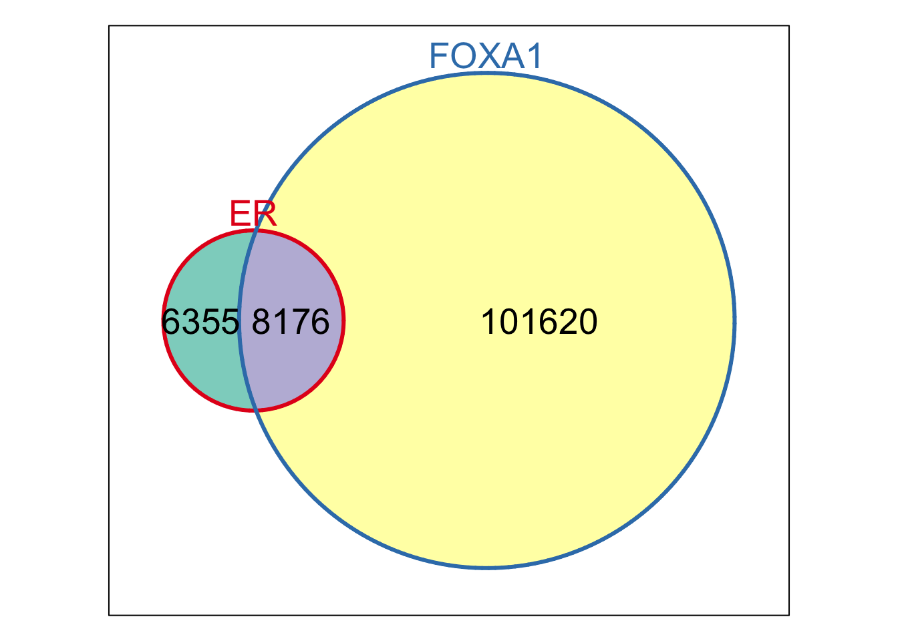
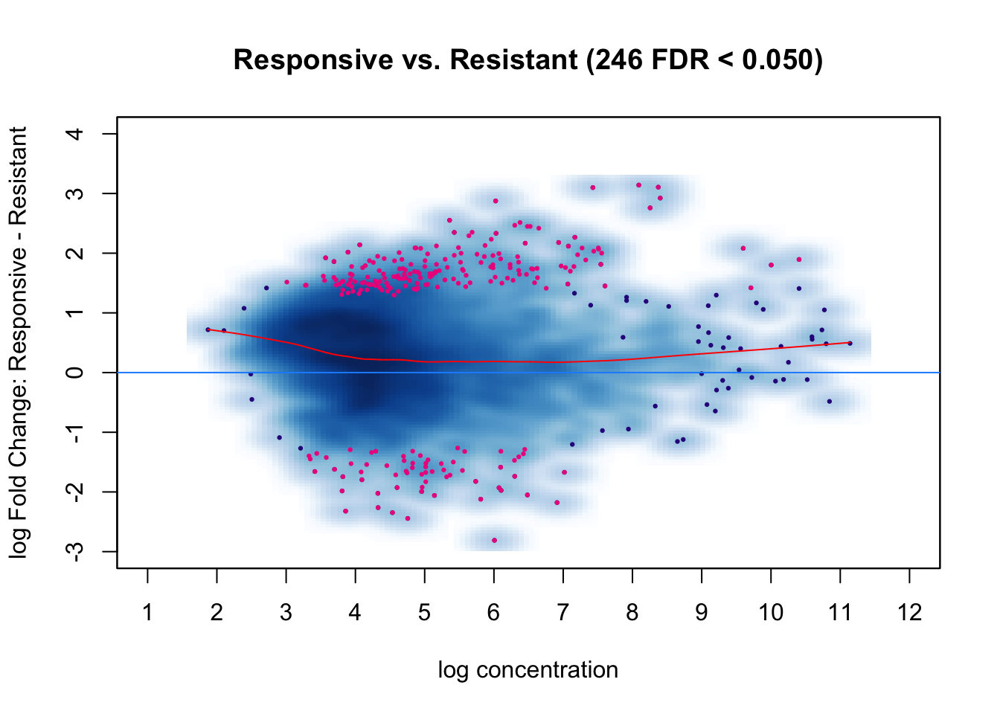
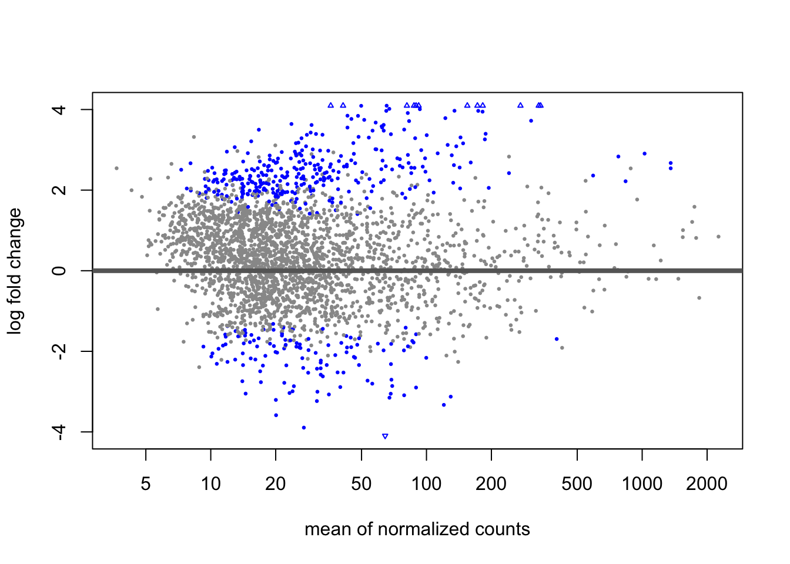
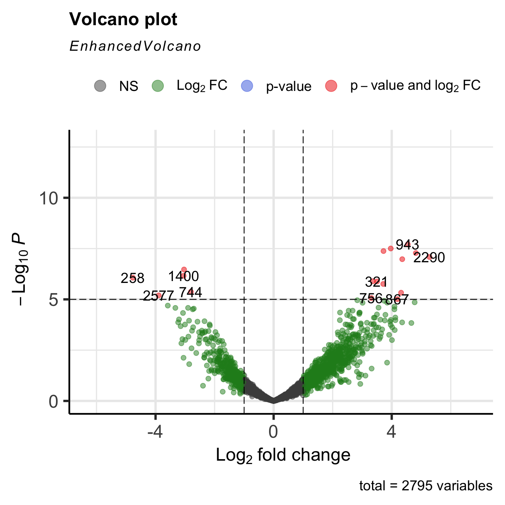

Introduction
Objective
The data for ChIP-seq peak calling are stacks of aligned reads across a genome. Some of these stacks correspond to the signal of interest (e.g. binding of a transcription factor or modified histone). Many other stacks are regarded as molecular or experimental noise, or as being influenced by a systematically greater accessibility of measurement by the experiment at that particular genomic location. The goal of this experiment is to understand how our transcription factors compare to one another in regards to binding sites.
About the Data
Source: https://content.cruk.cam.ac.uk/bioinformatics/software/DiffBind/DiffBind_vignette_data.tar.gz
The easiest way to set up an experiment to analyze is with a sample sheet. The sample sheet can be a , or it can be read directly from a csv file. Here is the example sample sheet read into a from a csv file:
The peaksets are read in using the following DiffBind function:
Differential Expression
PCA
While the correlation heatmaps already seen are good for showing clustering, plots based on principal components analysis can be used to give a deeper insight into how samples are associated. A PCA plot corresponding to Figure 2, which includes normalized read counts for all 2845 binding sites, can be obtained as follows:
The resulting plot (Figure 5) shows all the MCF7-derived samples (red) clustering on one side of the first (horizontal) component, with the Responsive and Resistant samples not separable either in the first nor in the second (vertical) component.3
I recommend to color by “tissue” and shape by “condition”
library(Glimma)
glimmaMDS(dds.tamoxifen, width=800, height=450)The bias towards enriched binding in the Responsive case (or loss of binding affinity in the Resistant case) can be visualized using MA and Volcano plots, as shown in the following Section.
dba.plotVenn(tamoxifen, contrast=1, bDB=TRUE, bGain=TRUE, bLoss=TRUE, bAll=FALSE)## Generating report-based DBA object... Venn diagrams are also useful for examining overlaps between peaksets, particularly when determining how best to derive consensus peaksets for read counting and further analysis. Section 8, which discusses consensus peaksets, shows a number of Venn plots in context, and the help page for dba.plotVenn has a number of additional examples.
MA Plots
MA plots are a useful way to visualize the relationship between the overall binding level at each site and the magnitude of the change in binding enrichment between conditions, as well as the effect of normalization on data. An MA plot can be obtained for the Resistant vs Responsive contrast as follows:
MA Plot i
dba.plotMA(tamoxifen)
MA Plot ii
plotMA(res)
The plot is shown in Figure 7. Each point represents a binding site, with the 246 points in magenta representing sites identified as differentially bound. There is a blue horizontal line through the origin (0 LFC), as well as a horizontal red curve representing a non-linear loess fit showing the underlying relationship between coverage levels and fold changes. The plot shows how the differentially bound sites appear to have a minimum absolute log fold difference of somewhere between one and two. As we have already seen, it also shows that more ERa binding sites lose binding affinity in the tamoxifen resistant condition than gain binding affinity, as evidenced by more red dots below the center line than are above it. This same data can also be shown with the concentrations of each sample groups plotted against each other plot using dba.plotMA(tamoxifen, bXY=TRUE). Section 7 contains several examples of MA plots, including showing non-normalized data, and the ability to plot any subset of samples against any other set of sample.
Volcano Plots
Similar to MA plots, Volcano plots also highlight significantly differentially bound sites and show their fold changes. Here, however, the confidence statistic (FDR or p-value) is shown on a negative log scale, helping visualize the relationship between the magnitude of fold changes and the confidence that sites are differentially bound. For example, the same data as plotted in Figure 7 can be visualized as a volcano plot:
Volcano Plot i
library(EnhancedVolcano)## Loading required package: ggplot2## Loading required package: ggrepel## Registered S3 methods overwritten by 'ggalt':
## method from
## grid.draw.absoluteGrob ggplot2
## grobHeight.absoluteGrob ggplot2
## grobWidth.absoluteGrob ggplot2
## grobX.absoluteGrob ggplot2
## grobY.absoluteGrob ggplot2library(magrittr)
EnhancedVolcano(res ,lab = rownames(res), x = 'log2FoldChange', y = 'pvalue')
Volcano Plot ii
dba.plotVolcano(tamoxifen)
The plot is shown in Figure 8, with the predominance of lower binding in the Resistant case evidenced by the greater number of significant sites on the negative side of the Fold Change (X) axis.
Heatmaps
The effect of different scoring methods (normalization) can be examined in these plots by setting the score parameter to a different value. The default value, DBA_SCORE_NORMALIZED, uses the normalized read counts (see Section 7). Another scoring method is to use RPKM fold (RPKM of the ChIP reads divided by RPKM of the control reads); a correlation heatmap for all the data using this scoring method can be obtained by typing dba.plotHeatmap(tamoxifen, score=DBA_SCORE_RPKM_FOLD).
Cell-Line Heatmap
dba.plotHeatmap(tamoxifen) The resulting plot (Figure 1) shows that while the replicates for each cell line cluster to- gether appropriately, the cell lines do not cluster into groups corresponding to those that are responsive (MCF7, T47D, and ZR75) vs. those resistant (BT474 and MCF7r) to ta- moxifen treatment. It also shows that the two most highly correlated cell lines are the two MCF7-based ones, even though they respond differently to tamoxifen treatment.
The resulting plot (Figure 1) shows that while the replicates for each cell line cluster to- gether appropriately, the cell lines do not cluster into groups corresponding to those that are responsive (MCF7, T47D, and ZR75) vs. those resistant (BT474 and MCF7r) to ta- moxifen treatment. It also shows that the two most highly correlated cell lines are the two MCF7-based ones, even though they respond differently to tamoxifen treatment.
Binding Site Heatmape
Another way to view the patterns of binding affinity directly in the differentially bound sites is via a binding affinity heatmap, showing the read scores for some or all of the binding sites. This can be plotted for the example case as follows:
hmap <- colorRampPalette(c("red", "black", "green"))(n = 13)
readscores <- dba.plotHeatmap(tamoxifen, contrast=1, correlations=FALSE,
scale="row", colScheme = hmap) Figure 10 shows the affinities and clustering of the differentially bound sites (rows), as well as the sample clustering (columns). In this case, the (normalized) counts have been row scaled, and a red/green heatmap color palette applied.
Figure 10 shows the affinities and clustering of the differentially bound sites (rows), as well as the sample clustering (columns). In this case, the (normalized) counts have been row scaled, and a red/green heatmap color palette applied.
ChIP-seq downstream analysis
peaks.consensus <- dba.peakset(tamoxifen, bRetrieve = T)
peaks.consensus## GRanges object with 2795 ranges and 11 metadata columns:
## seqnames ranges strand | BT4741 BT4742 MCF71
## <Rle> <IRanges> <Rle> | <numeric> <numeric> <numeric>
## 1 chr18 90841-91241 * | 2.46925 1.21476 0.00000
## 2 chr18 150222-150622 * | 18.51941 15.79192 51.17477
## 3 chr18 150807-151207 * | 13.58090 9.71811 9.30450
## 4 chr18 189192-189592 * | 13.58090 26.72479 46.52252
## 5 chr18 199821-200221 * | 14.81553 19.43621 2.32613
## ... ... ... ... . ... ... ...
## 2791 chr18 77782651-77783051 * | 13.58090 1.21476 6.97838
## 2792 chr18 77903180-77903580 * | 8.64239 18.22145 4.65225
## 2793 chr18 77955380-77955780 * | 18.51941 10.93287 18.60901
## 2794 chr18 77968226-77968626 * | 64.20062 70.45627 123.28468
## 2795 chr18 77987616-77988016 * | 22.22329 3.64429 148.87207
## MCF72 MCF73 T47D1 T47D2 MCF7r1 MCF7r2 ZR751
## <numeric> <numeric> <numeric> <numeric> <numeric> <numeric> <numeric>
## 1 0.00000 0.0000 0.00000 0.546177 0.0000 0.0000 25.08139
## 2 24.08413 46.6628 0.00000 3.277061 22.2163 12.2256 13.68076
## 3 13.13680 13.8260 2.01520 2.730884 32.6710 24.4513 2.28013
## 4 26.27360 65.6736 6.04561 3.277061 107.1610 73.3538 18.24101
## 5 8.75787 10.3695 10.07602 10.923537 15.6821 19.0176 33.06183
## ... ... ... ... ... ... ... ...
## 2791 24.0841 3.45651 14.10642 8.19265 6.53421 9.50882 23.9413
## 2792 0.0000 6.91301 8.06081 11.46971 9.14789 4.07521 30.7817
## 2793 13.1368 8.64126 26.19765 7.10030 2.61368 8.15042 34.2019
## 2794 89.7681 79.49962 12.09122 16.38531 130.68413 66.56177 55.8631
## 2795 89.7681 81.22787 14.10642 6.55412 60.11470 23.09286 205.2113
## ZR752
## <numeric>
## 1 10.95140
## 2 10.95140
## 3 5.31925
## 4 13.14168
## 5 17.20934
## ... ...
## 2791 10.9514
## 2792 17.8351
## 2793 27.2220
## 2794 42.5540
## 2795 146.7487
## -------
## seqinfo: 1 sequence from an unspecified genome; no seqlengths